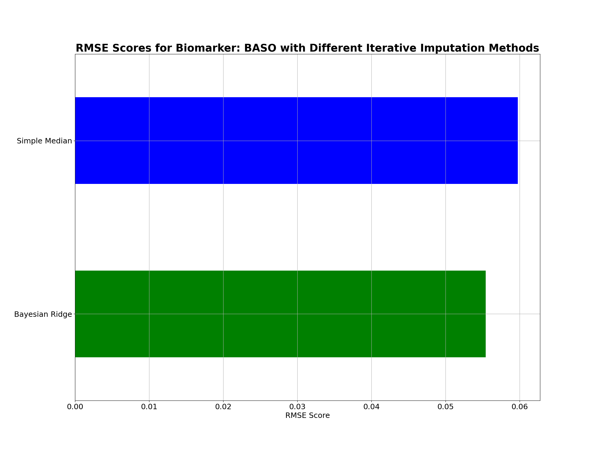
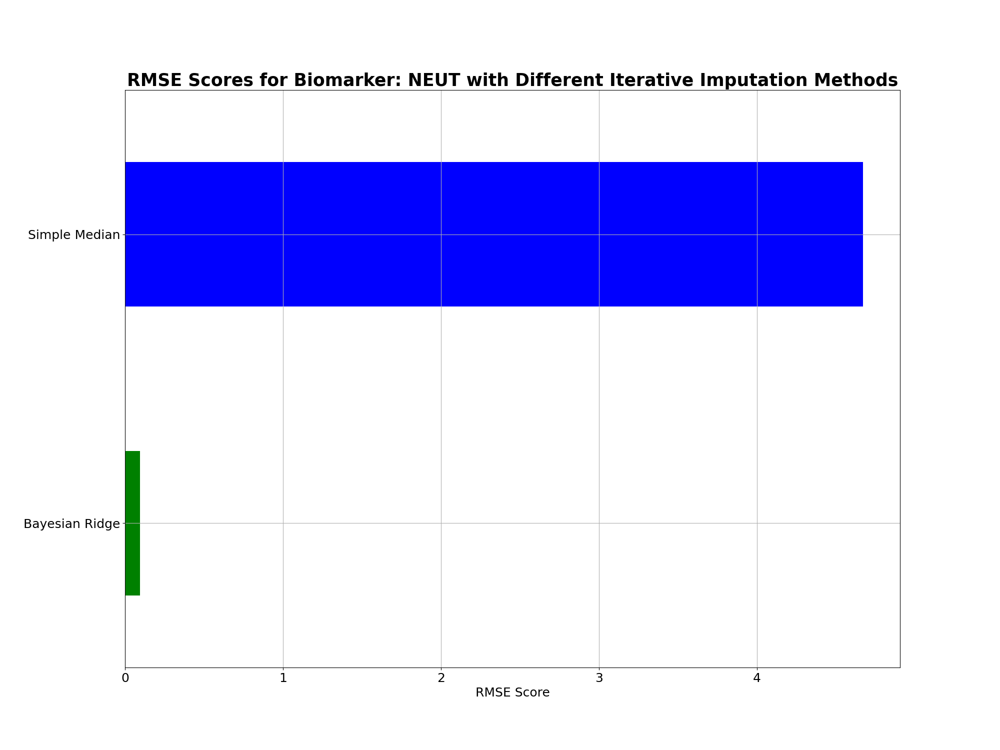
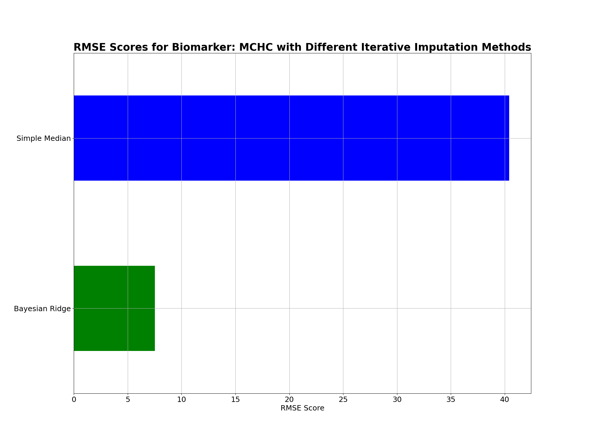
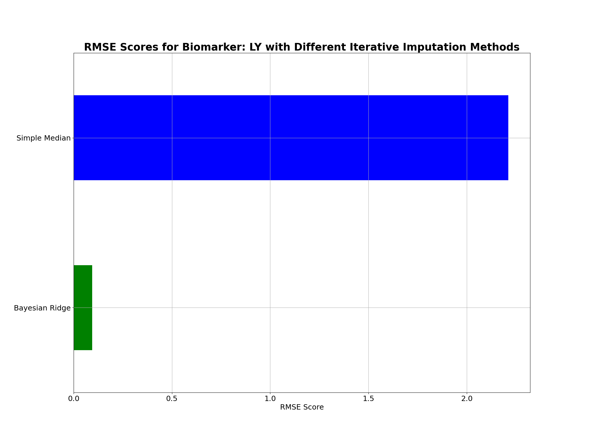
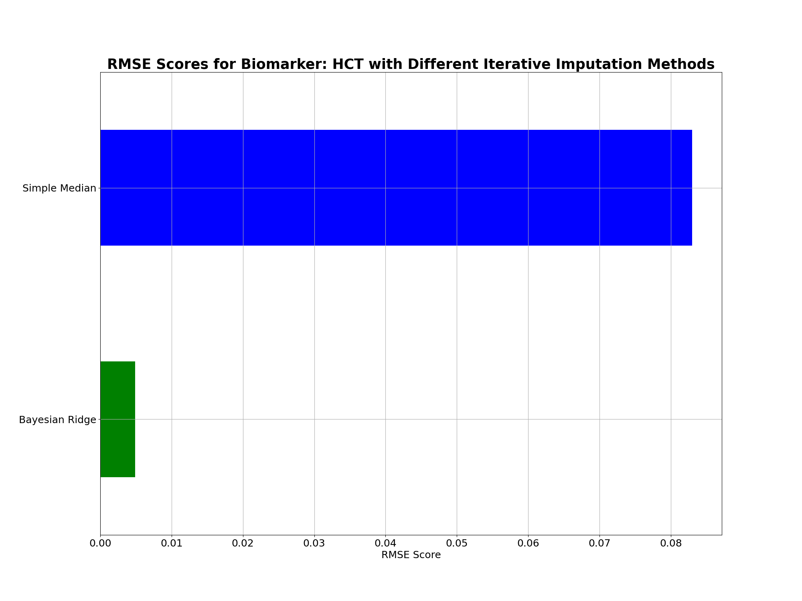
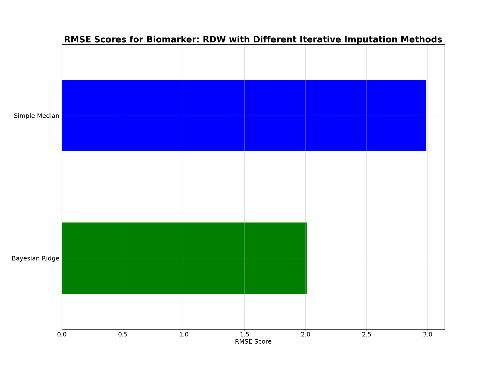
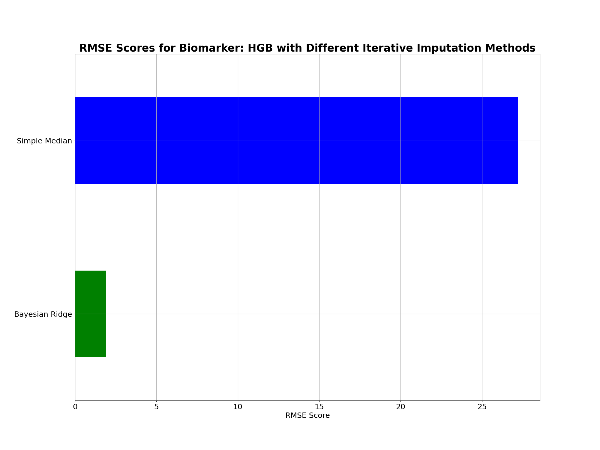
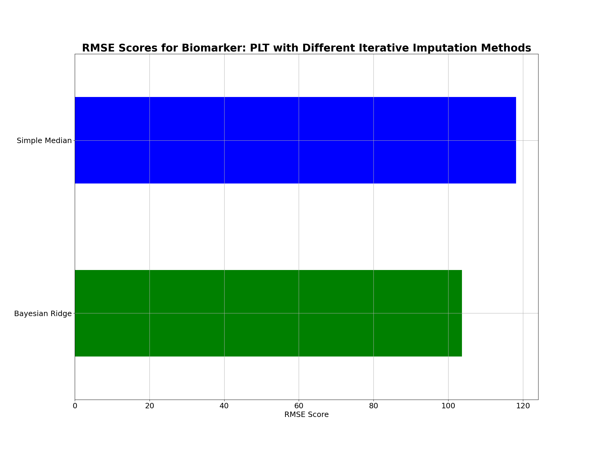
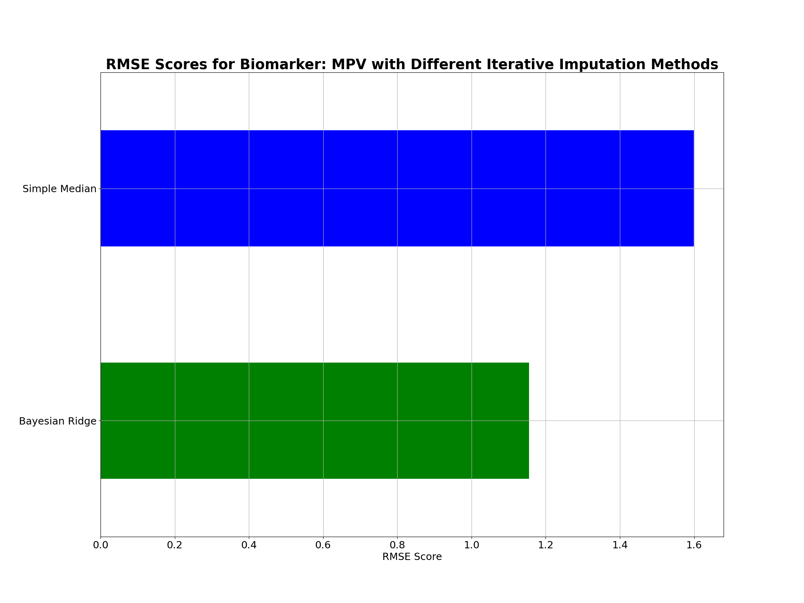
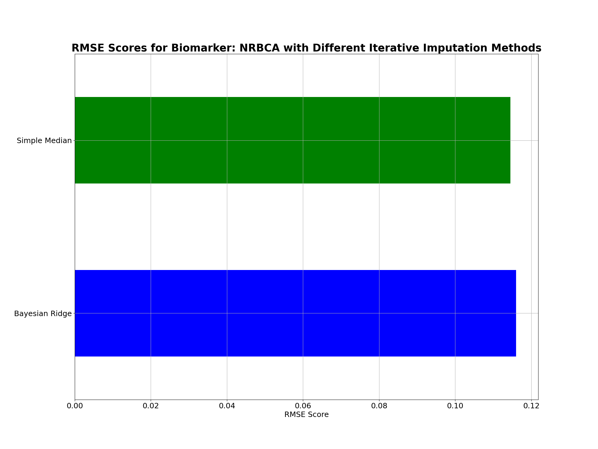

Note
Click here to download the full example code
Iterative Imputer Experiment I¶
Single biomarker removal experiment with K-Fold Cross Validation.
Libraries import¶
14 15 16 17 18 19 20 21 22 23 24 25 26 27 28 29 30 31 32 | import numpy as np
import pandas as pd
import matplotlib.pyplot as plt
from sklearn.model_selection import KFold
from sklearn.linear_model import BayesianRidge
from sklearn.tree import DecisionTreeRegressor
from sklearn.ensemble import ExtraTreesRegressor
from sklearn.neighbors import KNeighborsRegressor
from sklearn.ensemble import RandomForestRegressor
from sklearn.linear_model import SGDRegressor
from sklearn.neural_network import MLPRegressor
from xgboost import XGBRegressor
from sklearn.experimental import enable_iterative_imputer
from sklearn.impute import IterativeImputer
from sklearn.impute import SimpleImputer
from sklearn import preprocessing
import warnings
warnings.filterwarnings("ignore")
from pkgname.utils.iter_imp import *
|
Data import¶
39 40 41 42 43 44 45 46 47 48 49 | # Set relative data path and set FBC panel list
path_data = 'datasets/Transformed_First_FBC_dataset.csv'
FBC_CODES = ["EOS", "MONO", "BASO", "NEUT", "RBC", "WBC",
"MCHC", "MCV", "LY", "HCT", "RDW", "HGB",
"MCH", "PLT", "MPV", "NRBCA"]
# Read data and drop Nan _uid records
df = pd.read_csv(path_data).dropna(subset=['pid'])
df.reset_index(drop=True, inplace=True)
|
Remove outliers from dataset¶
56 57 58 59 60 61 62 63 64 65 66 | # Obtain the biomarkers DataFrame with outliers
biomarkers_df = df[FBC_CODES].dropna(subset=FBC_CODES)
# Make dataset copy
biomarkers_original_df_copy = biomarkers_df.copy(deep=True)
# Store column names
cols = [col for col in biomarkers_df.columns]
# Convert to array for processing
biomarkers_data = biomarkers_df.values
|
Biomarker correlations¶
73 74 75 76 77 78 79 80 81 82 83 84 | # Obtain highest correlation pairs Pearson Correlation Coefficient
biomarkers_highest_corr = corr_pairs(biomarkers_df)
# Find biomarkers that are to be dropped from the dataset
biomarkers_to_drop = np.unique(biomarkers_highest_corr[['var1', 'var2']].values)
print("\nBiomarkers with high correlations: ", biomarkers_to_drop)
# DataFrame to store all experiment MSE scores
rmse_score_df = pd.DataFrame(index=biomarkers_df.columns)
rmse_score_df.index.names = ['Biomarker']
rmsle_score_df = rmse_score_df.copy(deep=True)
|
Out:
Biomarkers with high correlations: ['HCT' 'HGB' 'MCH' 'MCV' 'NEUT' 'RBC' 'WBC']
K-Fold Cross Validation (K = 5)¶
91 92 93 94 95 96 97 98 99 | # Define min-max scaler and normalise dataset
min_max_scaler = preprocessing.StandardScaler()
# Initialise 5-Fold cross validation
kf5 = KFold(n_splits=5, shuffle=False, random_state=None)
# Temporary mse_score_df to store mse score for each fold
temp_rmse_score_df = rmse_score_df.copy(deep=True)
temp_rmsle_score_df = rmse_score_df.copy(deep=True)
|
Define estimators¶
107 108 109 110 111 112 113 114 115 116 117 118 119 120 121 | estimators = {
'Bayesian Ridge': BayesianRidge(),
# 'Decision Tree': DecisionTreeRegressor(),
# 'Random Forest': ExtraTreesRegressor(),
# 'XGBoost': XGBRegressor(),
# 'K-NN': KNeighborsRegressor(weights='distance'),
# 'Least Squares (SGD)': SGDRegressor(loss='squared_loss',
# early_stopping=True),
# 'Huber (SGD)': SGDRegressor(loss='huber', early_stopping=True),
# 'Support Vector (SGD)': SGDRegressor(loss='epsilon_insensitive',
# early_stopping=True),
# 'MLP': MLPRegressor(hidden_layer_sizes=32,
# early_stopping=True, max_iter=100),
'Simple Median': SimpleImputer(strategy='median'),
}
|
Predict values using imputer¶
128 129 130 131 132 133 134 135 136 137 138 139 140 141 142 143 144 145 146 147 148 149 150 151 152 153 154 155 156 157 158 159 160 161 162 163 164 165 166 167 168 169 170 171 172 173 174 175 176 177 178 179 180 181 182 183 184 185 186 187 188 189 190 191 192 193 | # Run 5-fold CV for each estimator method
for method, imputer_estimator in estimators.items():
for k, (train_idx, test_idx) in enumerate(kf5.split(biomarkers_data)):
# Obtain 1-fold test and 4-fold train sets
train_df = biomarkers_df.iloc[train_idx]
val_scaled = min_max_scaler.fit(train_df)
train_scaled = val_scaled.transform(train_df)
train_scaled_df = pd.DataFrame(train_scaled)
train_scaled_copy_df = train_scaled_df.copy(deep=True)
test_df = biomarkers_df.iloc[test_idx]
test_df.columns = [x for x in range(test_df.shape[1])]
test_scaled = val_scaled.transform(test_df)
test_scaled_df = pd.DataFrame(test_scaled)
test_scaled_copy_df = test_scaled_df.copy(deep=True)
# Define imputer
if method == 'Simple Median':
imputer = imputer_estimator
else:
imputer = IterativeImputer(estimator=imputer_estimator)
# Fit on the dataset
trained_imputer = imputer.fit(train_scaled_df)
# Test each biomarker independently
for biomarker in test_scaled_df.columns:
# Use a clean copy of the normalised data set
test_with_nan = test_scaled_df.copy(deep=True)
# Strictly set every biomarker value to NaN
col_pos = test_with_nan.columns.get_loc(biomarker)
test_with_nan.iloc[::1, col_pos] = np.nan
# Transform test data using trained imputer
test_transformed_data = trained_imputer.transform(test_with_nan)
# Make dataframe of imputed data
imputed_data = pd.DataFrame(data=test_transformed_data,
index=[i for i in range(test_transformed_data.shape[0])],
columns=test_scaled_df.columns)
# Inverse transform the scaled values
test_og_data = abs(val_scaled.inverse_transform(imputed_data))
imputed_data_og = pd.DataFrame(data=test_og_data,
index=[i for i in range(test_transformed_data.shape[0])],
columns=test_scaled_df.columns)
# Compute true and obtain real value
val_pred = imputed_data_og[biomarker].values
val_true = test_df[biomarker].values
# Calculate MSE scores from the true and predicted values
rmse_score = get_metric_scores(val_true, val_pred, 'RMSE')
rmsle_score = get_metric_scores(val_true, val_pred, 'RMSLE')
# Store in temp_mse_score_df and temp_rmsle_score_df
temp_rmse_score_df.loc[temp_rmse_score_df.index[biomarker], f'K-Fold: {k+1}'] = rmse_score
temp_rmsle_score_df.loc[temp_rmsle_score_df.index[biomarker], f'K-Fold: {k+1}'] = rmsle_score
# Calculate mean MSE score for each biomarker across the 5-folds
rmse_score_df[f'{method}'] = temp_rmse_score_df.mean(axis=1)
rmsle_score_df[f'{method}'] = temp_rmsle_score_df.mean(axis=1)
|
Combined RMSE Plot for each biomarker¶
214 215 216 217 218 219 220 221 222 223 | # Plot horizontal bar graph
for biomarker, scores in rmse_score_df.iterrows():
plt.figure(figsize=(20,15))
plt.title(f'RMSE Scores for Biomarker: {biomarker} with Different Iterative Imputation Methods', fontweight='bold', fontsize=25)
cmap = ['green' if (x == min(scores)) else 'blue' for x in scores]
scores.plot.barh(grid=True, color=cmap)
plt.xticks(fontsize=18)
plt.yticks(fontsize=18)
plt.xlabel('RMSE Score', fontsize=18)
plt.show()
|


- 
- 
- 
- 
- 
- 
- 
- 
- 
- 
Total running time of the script: ( 0 minutes 37.551 seconds)